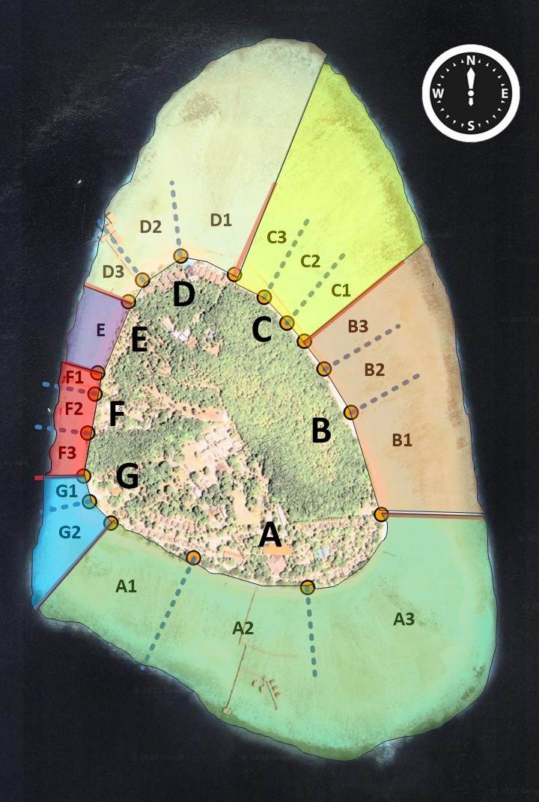

Nest relocation
Wardens record the relocation date, species, and number of eggs transferred to the hatchery.
Every protected nest brings us one step closer to a future where sea turtles thrive. Follow their journey from relocation to emergence, with updates from our hatchery team.
Explore the outcomes of our hatchery effort, from eggs relocated to hatchlings safely released.
Figures are calculated from administrator-approved published records only.
| Species | Nests | Eggs | Released* |
|---|
Approved records across all nesting years
Select a season for monthly nest counts, or choose all seasons for yearly counts.
*Hatchlings released include healthy and deformed hatchlings released before excavation, plus live hatchlings recovered and released during excavation, when documented and reviewed. Missing counts are not treated as zero. Season = calendar year of nest relocation; only approved records appear in these statistics.
Recent relocation, emergence and excavation milestones from approved demonstration records.
Loading approved milestones…
Explore our hatchery records, see how each nest is progressing, and discover the stories behind our conservation work.
Try another nest ID, season, status or species.
At TRACC, sea turtle protection involves dedicated wardens, researchers, and volunteers. Each nest record reflects the care and monitoring that takes place long after the eggs are relocated.
This portal helps make that work visible while respecting the need to protect sensitive nesting information.
The beach sectors help our wardens describe where a nest was found around Pom Pom Island without revealing precise GPS coordinates. Explore the sectors shown on the original TRACC reference map.
Sector labels are generalized site references, not pinpoint nest locations. The background image is TRACC's supplied sector reference, reproduced without altering boundaries.
Browse nests
What happens after a nest enters the hatchery?
Wardens record the relocation date, species, and number of eggs transferred to the hatchery.
From day 50 to day 60 after relocation, a still-incubating nest is labelled “Emergence Soon” as an estimated monitoring phase. Only wardens can confirm actual emergence, subject to approval.
When hatchlings emerge, wardens record observed dates and numbers rather than predicting outcomes.
After appropriate monitoring and nest excavation, confirmed hatching and emergence outcomes can be published.
About the rates: Hatching success is displayed as confirmed hatched eggs ÷ eggs relocated, and emergence success as hatchlings emerged ÷ eggs relocated. Both are shown only when counts have been verified after nest excavation.